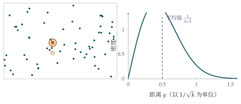

STEP II 2012，第 13 题
继续之前，请先阅读题目（原题为英文）。题目载于 STEP Support Programme 的题目资料库： step.maths.org/questions/12-s2-q13
引子
假如超级市场、树木、恒星或流动电话发射站“随机”散布在某个区域内，你要走多远才到达最近的一个？答案只取决于密度 \(k\)（每单位面积的平均数目），而且有一个独特的形状，就是瑞利分布（Rayleigh distribution）。平均而言，最近的一个位于距离 \(\frac{1}{2\sqrt k}\) 处：若每平方公里有一间超级市场，这距离就是 \(500\) 米。
这个模型称为空间泊松过程（spatial Poisson process），即时间上随机到达（第 12.18 节）的二维版本。计算过程简短而优美，但它真正的价值在于充当基准：生态学家把实际的最近邻距离与这条公式比较，以判断树木或鸟巢究竟是聚集成群、随机散布，还是刻意彼此隔开。
动笔之前
一个平均值为 \(\mu\) 的泊松随机变量（Poisson random variable），取值 \(0\) 的概率是多少？
\(\mathrm{P}(0) = e^{-\mu}\)。半径为 \(y\) 的圆面积是 \(\pi y^2\)，所以圆内超级市场数目的平均值为 \(k\pi y^2\)。
逐步解题
阶段 1 附近没有超级市场
在距离 \(y\) 以内没有超级市场的概率是 \(e^{-\pi ky^2}\)。
阶段 2 最近距离的分布
\(Y \geq y\) 表示在距离 \(y\) 以内没有超级市场。那么 \(\mathrm{P}(Y < y)\) 是甚么？
\(\mathrm{P}(Y < y) = 1 - e^{-\pi ky^2}\)，求导后便得到密度函数（density） \[\mathrm{f}(y) = 2\pi kye^{-\pi ky^2}, \qquad y \geq 0. \qed\]
阶段 3 平均值
可以用分部积分法（integration by parts）计算 \(y\,\mathrm{f}(y)\) 的积分，也可以利用 \(\mathrm{E}(Y) = \int_0^\infty\mathrm{P}(Y > y)\,\mathrm{d}y\)。然后作代换，以便使用题目给出的高斯积分（Gaussian integral）。
\[\mathrm{E}(Y) = \int_0^\infty e^{-\pi ky^2}\,\mathrm{d}y.\] 代入 \(x = y\sqrt{2\pi k}\)，使得 \(\pi ky^2 = \frac12x^2\)，便得 \(\mathrm{E}(Y) = \frac{1}{\sqrt{2\pi k}}\sqrt{\frac\pi2} = \frac{1}{2\sqrt k}\)。■
阶段 4 方差
\[\mathrm{E}(Y^2) = \int_0^\infty y^2\cdot2\pi kye^{-\pi ky^2}\,\mathrm{d}y.\] 代入 \(u = \pi ky^2\)（因此 \(\mathrm{d}u = 2\pi ky\,\mathrm{d}y\)），上式变成 \(\int_0^\infty\frac{u}{\pi k}e^{-u}\,\mathrm{d}u = \frac{1}{\pi k}\)。因此 \[\mathrm{Var}(Y) = \frac{1}{\pi k} - \frac{1}{4k} = \frac{4 - \pi}{4\pi k}. \qed\]

回顾
把距离问题化为计数问题。“最近的一个比 \(y\) 更远”就是“在 \(y\) 以内一个也没有”。
先求累积分布，再求密度。\(\mathrm{P}(Y < y)\) 可以直接写出；求导后便得到密度函数。
以代换化为已知积分。每个矩（moment）都化成了高斯积分或指数积分。
背后的数学
平面上的泊松过程
强度（intensity）为 \(k\) 的空间泊松过程，是一种随机散布的点集，满足：互不相交的区域内的点数彼此独立，而面积为 \(A\) 的区域内的点数服从平均值为 \(kA\) 的泊松分布。把极大量的点独立而均匀地投放到一片极大的区域上，并保持适当的平均密度，得到的就是这种过程：这正是“稀有事件定律”（law of rare events），它同样解释了错排（derangement）的现象（第 9.8 节）。它是完全空间随机性（complete spatial randomness）的自然模型，实际的分布形态都以它为比较标准。Clark–Evans 检验（Clark–Evans test）由两位生态学家于 1954 年提出，把观察所得的平均最近邻距离与 \(\frac{1}{2\sqrt k}\) 比较：小得多表示有聚集现象（种子落在母树附近），大得多则表示间隔规则（有领域行为的鸟类，或植物之间争夺水分）。
三维的情况
在三维空间中作同样的计算，可得到最近的恒星、分子或星系的距离满足 \(\mathrm{P}(Y > y) = e^{-\frac43\pi ky^3}\)。钱德拉塞卡（Subrahmanyan Chandrasekhar）在 1943 年用它来研究一颗恒星受随机分布的邻近恒星所施的引力，物理学家则用它来计算气体分子的平均自由程（mean free path）。
密度函数 \(\frac{y}{\sigma^2}e^{-y^2/(2\sigma^2)}\) 以瑞利勋爵（Lord Rayleigh）命名，他在 1880 年研究声学理论时遇上它：它描述了许多相位随机的波叠加后的振幅。若一点的两个坐标是独立的正态随机变量（normal random variable），它也给出该点与原点距离的分布，这是理解它为何在这里出现的另一个角度（练习 3）。今天，它用来模拟流动电话信号的衰落，因为信号是沿着许多相位随机的路径到达接收器的。
思维技巧
要求最小值、最大值或最近距离的分布时，\(\mathrm{P}(Y > y)\) 往往很容易直接写出。求导便得到密度函数。
这个方法会在 第 12.25 节 再次出现，用来处理许多随机寿命中最长的一个。在大学里，这是处理任何“顺序统计量”（order statistic）的标准第一步。
延伸练习
中位数。求到最近超级市场的距离的中位数（median），并与平均值比较。
第二近的。求到第二近的超级市场的距离的分布。（提示：\(\mathrm{P}(Y_2 > y)\) 是在 \(y\) 以内最多只有一间超级市场的概率。）
正态坐标。若 \(U\) 和 \(V\) 是独立的 \(\mathrm{N}(0, \sigma^2)\) 随机变量，证明 \(\sqrt{U^2 + V^2}\) 的密度函数为 \(\frac{r}{\sigma^2}e^{-r^2/(2\sigma^2)}\)。\(\sigma\) 取何值时会得到超级市场的分布？
Clark–Evans。在一项调查中，一片面积 \(1\) km\(^2\) 的树林内有 \(400\) 棵树，而一棵树到其最近邻的平均距离为 \(35\) m。这与完全空间随机性相符吗？还是显示有聚集或间隔的现象？
延伸阅读
Peter Diggle, Statistical Analysis of Spatial Point Patterns（Arnold）。这方面的标准参考书，载有 Clark–Evans 检验及其后续发展的方法。
John Kingman, Poisson Processes（Oxford University Press）。一本优美的短篇著作，讨论任意维数的泊松过程。
Geoffrey Grimmett & David Stirzaker, Probability and Random Processes（Oxford University Press），论泊松过程的一章。